Figure 2
Load cohort annotation file and Epithelial cells Seurat object
Figure 2-A
p4 = DimPlot(aux.seurat,
reduction = "umap",
raster=FALSE,
group.by = "Major.Class",
pt.size = .1,
split.by = 'Major.Class',
cols = c("Endometrioma" = "#7b3294",
"Eutopic Endometrium" = "#c2a5cf",
"Endometriosis" = "#d9f0d3",
"No endometriosis detected" = "#a6dba0",
"Unaffected ovary" = "#008837"))
p4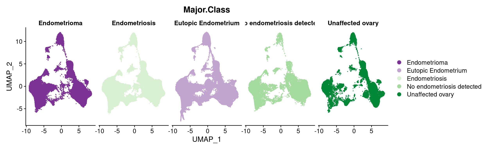
Figure 2-B
p4 = DimPlot(object = aux.seurat,
pt.size = 0.1,
raster=FALSE,
label = T)
p4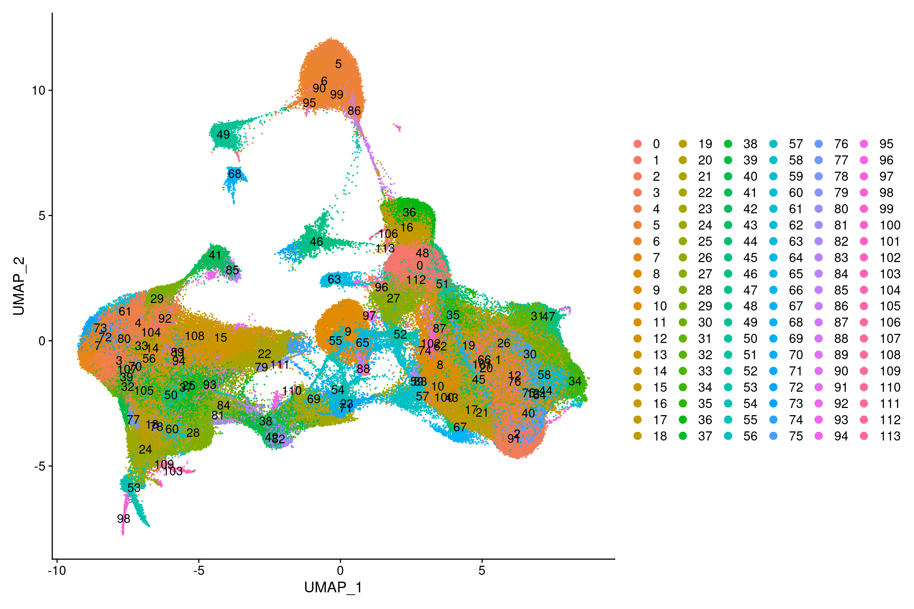
Figure 2-C
p4 = DimPlot(object = aux.seurat,
pt.size = 0.1,
raster=FALSE,
group.by = "active.cluster",
label = T)
p4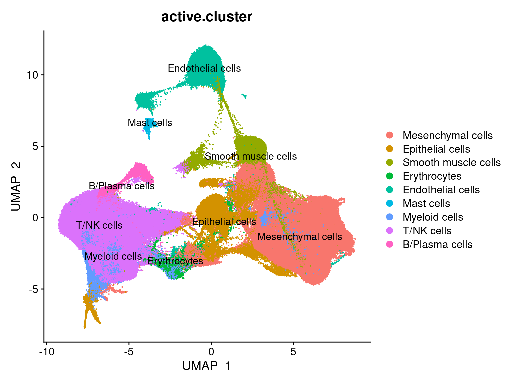
Figure 3-E
table.gene.markers <- data.frame(Gene=c("DCN", "COL11A1", "PDGFRA","PDGFRB"), Cell="Mesenchymal cells")
table.gene.markers <- rbind(table.gene.markers, data.frame(Gene=c("EPCAM", "KRT8", "KRT10", "KRT18", "KRT19"), Cell="Epithelial cells"))
table.gene.markers <- rbind(table.gene.markers, data.frame(Gene=c("ACTA2"), Cell="Smooth muscle cells"))
table.gene.markers <- rbind(table.gene.markers, data.frame(Gene=c("HBB", "GYPA"), Cell="Erythrocytes"))
table.gene.markers <- rbind(table.gene.markers, data.frame(Gene=c("CLDN5", "PECAM1", "CD34", "ESAM"), Cell="Endothelial cells"))
table.gene.markers <- rbind(table.gene.markers, data.frame(Gene=c("TPSB2"), Cell="Mast cells"))
table.gene.markers <- rbind(table.gene.markers, data.frame(Gene=c("LYZ", "CD14","C1QA", "CLEC10A"), Cell="Myeloid cells"))
table.gene.markers <- rbind(table.gene.markers, data.frame(Gene=c("CD2", "CD3D", "CD3E", "CD3G", 'CD8A', "CCL5"), Cell="T/NK cells"))
table.gene.markers <- rbind(table.gene.markers, data.frame(Gene=c("JCHAIN", "CD79A"), Cell="B/Plasma cells"))
p = DotPlot(object = aux.seurat, assay = "RNA", group.by = "active.cluster", features = table.gene.markers$Gene) +
scale_colour_gradient2(low = "#2166ac", mid = "#f7f7f7", high = "#b2182b") +
RotatedAxis()
p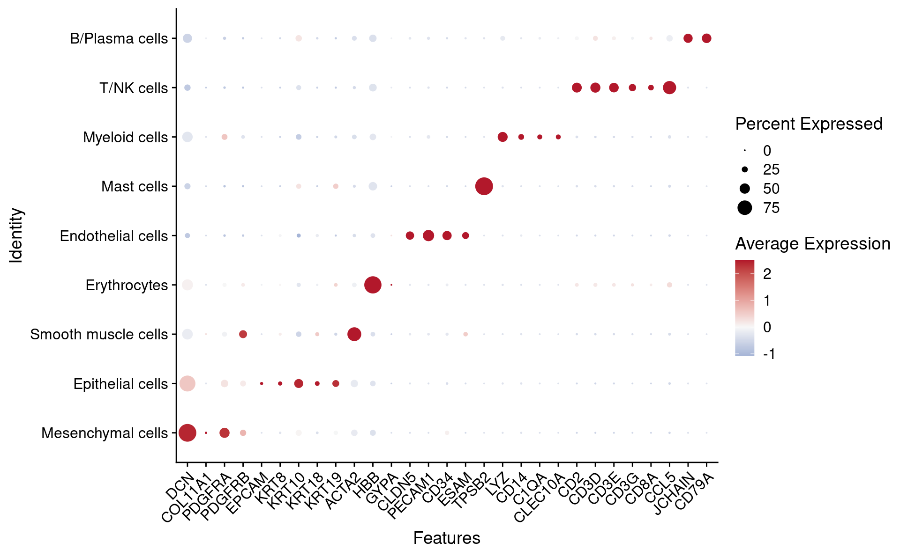
Figure 3-F
bsize = 14
aux = data.frame(table(aux.seurat@meta.data$active.cluster))
aux = aux[order(aux$Freq),]
aux$Var1 <- factor(aux$Var1, levels = aux$Var1)
order.cell = aux$Var1
pd <- ggplot(aux, aes(x = Var1, y = Freq)) +
geom_point(size=2) +
theme_minimal(base_size = bsize) +
#geom_text(aes(label=Freq), position=position_dodge(width=2), hjust=-0.1, size=3) +
ylim(0, 77000) +
scale_y_continuous(breaks=c(0, 25000, 50000, 75000, 100000, 125000)) +
geom_hline(yintercept = c(0, 25000, 50000, 75000, 100000, 125000), linetype="dashed", color = "grey") +
#scale_x_discrete(limits = rev(levels(prop.cells$Var1))) +
coord_flip() +
theme(plot.title = element_text(hjust = 0.5),
axis.text.x = element_text(angle = 270, hjust = 1),
axis.title.x = element_blank(),
axis.title.y = element_blank(),
legend.position = "left")## Scale for 'y' is already present. Adding another scale for 'y', which will
## replace the existing scale.pd
counts.prop = data.frame(table(aux.seurat@meta.data$Major.Class, aux.seurat@meta.data$active.cluster))
counts.prop.perc = group_by(counts.prop, Var2) %>% mutate(percent = Freq/sum(Freq))
aux = aggregate(counts.prop$Freq, by=list(Category=counts.prop$Var1), FUN=sum)
aux$Var2 = "Total"
colnames(aux) <- c("Var1", "Freq", "Var2")
aux$Var2 <- factor(aux$Var2, levels = c("Total", order.cell))
aux$percent = aux$Freq / sum(aux$Freq)
counts.prop.perc = rbind(as.data.frame(counts.prop.perc), aux)
pd <- ggplot(counts.prop.perc, aes(x = Var2, y = percent, fill = Var1, group=Var2)) +
geom_bar(position="stack",stat = "identity", width=0.8) +
scale_fill_manual(name="Class", values = c("Endometrioma" = "#7b3294",
"Eutopic Endometrium" = "#c2a5cf",
"Endometriosis" = "#d9f0d3",
"No endometriosis detected" = "#a6dba0",
"Unaffected ovary" = "#008837")) +
#scale_x_discrete(limits = rev(levels(counts.prop.perc$Var2))) +
coord_flip() +
theme_set(theme_gray(base_size = bsize)) +
theme(plot.title = element_text(hjust = 0.5),
axis.text.x = element_text(angle = 270, hjust = 1),
axis.text.y = element_text(angle = 0, hjust = 1),
axis.title.x = element_blank(),
axis.title.y = element_blank(),
legend.position = "none")
pd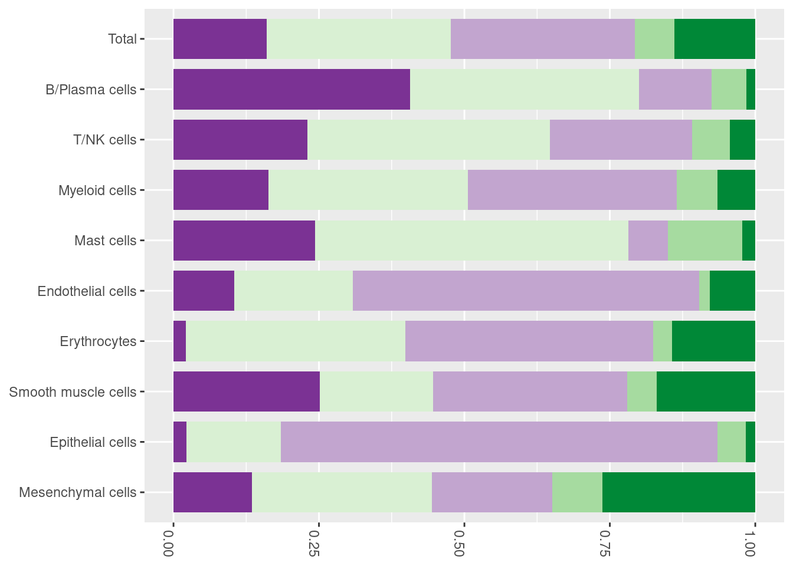
counts.prop = data.frame(table(aux.seurat@meta.data$Patient.No., aux.seurat@meta.data$active.cluster))
counts.prop.perc = group_by(counts.prop, Var2) %>% mutate(percent = Freq/sum(Freq))
col = c("#a50026", "#d73027", "#f46d43", "#fdae61", "#fee090", "#ffffbf",
"#00441b", "#1b7837", "#5aae61", "#a6dba0", "#d9f0d3", "#f7f7f7",
"#e0f3f8", "#abd9e9", "#74add1", "#4575b4", "#313695",
"#40004b","#762a83", "#9970ab", "#c2a5cf")
aux = aggregate(counts.prop$Freq, by=list(Category=counts.prop$Var1), FUN=sum)
aux$Var2 = "Total"
colnames(aux) <- c("Var1", "Freq", "Var2")
aux$Var2 <- factor(aux$Var2, levels = c("Total", order.cell))
aux$percent = aux$Freq / sum(aux$Freq)
counts.prop.perc = rbind(as.data.frame(counts.prop.perc), aux)
p1 <- ggplot(counts.prop.perc, aes(x = Var2, y = percent, fill = Var1, group=Var2)) +
geom_bar(position="stack",stat = "identity", width=0.8) +
scale_fill_manual(name="Patient", values = c( "1" = col[1],
"2" = col[2],
"3" = col[3],
"4" = col[4],
"5" = col[5],
"6" = col[6],
"7" = col[7],
"8" = col[8],
"9"= col[9],
"10" = col[10],
"11"= col[11],
"12" = col[12],
"13" = col[13],
"14" = col[14],
"15" = col[15],
"16" = col[16],
"17" = col[17],
"18" = col[18],
"19" = col[19],
"20"= col[20],
"21" = col[21])) +
coord_flip() +
theme_set(theme_gray(base_size = bsize)) +
theme(plot.title = element_text(hjust = 0.5),
axis.text.x = element_text(angle = 270, hjust = 1),
axis.text.y = element_text(angle = 0, hjust = 1),
axis.title.x = element_blank(),
axis.title.y = element_blank(),
legend.position = "none")
p1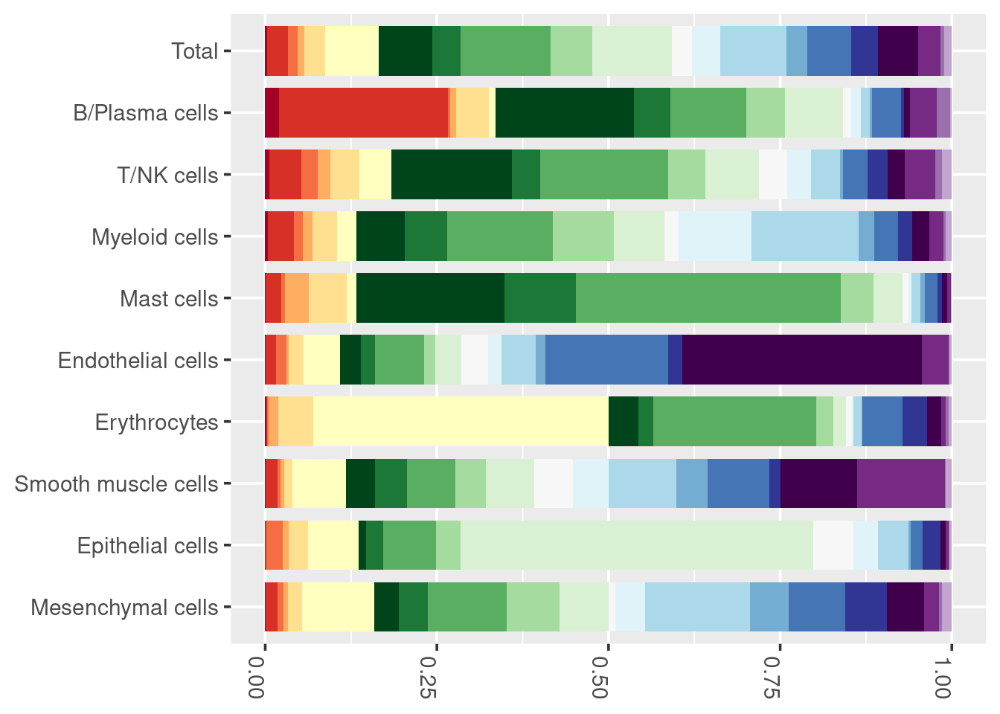
aux = aux.seurat@meta.data[,c("nFeature_RNA", "active.cluster")]
aux$active.cluster <- factor(aux$active.cluster, levels = as.character(order.cell), ordered = TRUE)
pd <- ggplot(aux, aes(y = nFeature_RNA, x = active.cluster)) +
geom_boxplot(outlier.alpha = 0.1) +
theme_minimal(base_size = bsize) +
coord_flip() +
#scale_x_discrete(limits = rev(levels(d10x.seurat.filt@meta.data$active.cluster))) +
ylim(0, 10000) +
theme(plot.title = element_text(hjust = 0.5),
axis.text.x = element_text(angle = 270, hjust = 1),
axis.title.x = element_blank(),
axis.title.y = element_blank()) +
stat_summary(fun=min, colour="darkred", geom="point",
shape=18, size=3, show.legend=FALSE)
pd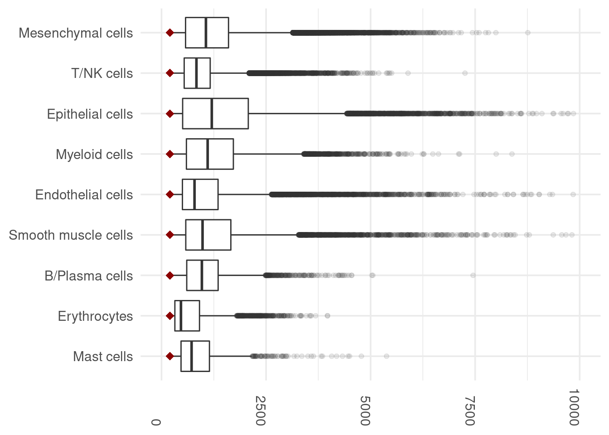
Figure 3-H
my_cluster_col = .anno[, c("Patient.No.",
"Major.Class",
"Fresh.Frozen",
# "Anatomic.annotation",
#"Pathologic.classification.",
# "Sequencing.batch",
"Menstrual.Cycle.Stage")]
#my_cluster_col$Pathologic.classification.[which(my_cluster_col$Pathologic.classification. == "")] = "none"
#my_cluster_col$Anatomic.annotation[which(my_cluster_col$Anatomic.annotation == "")] = "none"
my_cluster_col$ID = c("Ovarian cyst (L)",
"Ovarian cyst (L)",
"Ovarian cyst (R)",
"Endometrium",
"Anterior cul de sac",
"Posterior cul de sac",
"Posterior cul de sac",
"Endometrium",
"Ovary",
"Pelvic side wall (R & L)",
"Anterior cul de sac",
"Ovarian cyst (R)",
"Uterosacral ligament (L & R)",
"Anterior cul de sac & Pelvic side wall (R)",
"Ovarian cyst (L)",
"Uterosacral ligament (L)",
"Rectal Serosa",
"Pelvic side wall (R & L)",
"Ovarian fossa (L)",
"Alterior abdominal wall & Anterior pelvic cul de sac",
"Ovarian cyst (R)",
"Perimetrium (R)",
"Perirectal fat",
"Endometrium",
"Uterosacral ligament (L)",
"Uterosacral ligament (R)",
"Bladder",
"Pelvic side wall (L)",
"Ovarian cyst (L)",
"Endometrium",
"Endometrium",
"Endometrium",
"Endometriosis (R)",
"Ovary (L)",
"Endometrium",
"Ovary (R)",
"Ovarian fossa (L)",
"Endometrium",
"Endometrium",
"Endometrium",
"Ovary",
"Ovarian cyst (L)",
"Ovarian fossa (R)",
"Uterosacral ligament (L)",
"Rectal Serosa",
"Ovarian fossa (L)",
"Uterosacral ligament (R)",
"Anterior cul de sac",
"Posterior uterus"
)
grid.newpage()
gridExtra::grid.table(my_cluster_col, rows = NULL)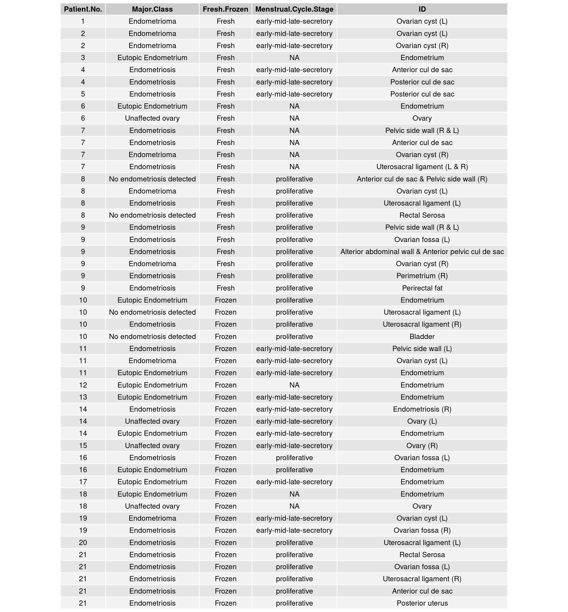
aux = data.frame(table(aux.seurat@meta.data$SampleName, aux.seurat@meta.data$seurat_clusters))
data.m = spread(aux, Var2, Freq)
rownames(data.m) <- data.m$Var1
data.m = t(data.m[, -1])
data.m.prob = t(t(data.m) / colSums(data.m))
df_pca <- prcomp(t(data.m.prob))
df_out <- as.data.frame(df_pca$x)
df_out$Class <- my_cluster_col$Major.Class
df_out$label <- rownames(my_cluster_col)
percentage <- round(df_pca$sdev / sum(df_pca$sdev) * 100, 2)
percentage <- paste( colnames(df_out), "(", paste( as.character(percentage), "%", ")", sep="") )
p <- ggplot(data=df_out, aes(x = PC1, y = PC3, color= Class)) +
geom_point(size = 2) +
scale_colour_manual(name = "Major Class", values = c("Endometrioma" = "#7b3294",
"Eutopic Endometrium" = "#c2a5cf",
"Endometriosis" = "#d9f0d3",
"No endometriosis detected" = "#a6dba0",
"Unaffected ovary" = "#008837")) +
xlab(percentage[1]) +
ylab(percentage[3]) +
theme_bw(base_size = 12) +
theme(panel.background = element_blank(),
panel.border=element_rect(fill=NA),
panel.grid.major = element_blank(),
panel.grid.minor = element_blank(),
strip.background=element_blank(),
axis.text.x=element_text(colour="black"),
axis.text.y=element_text(colour="black"),
axis.ticks=element_line(colour="black"),
plot.margin=unit(c(1,1,1,1),"line"))
p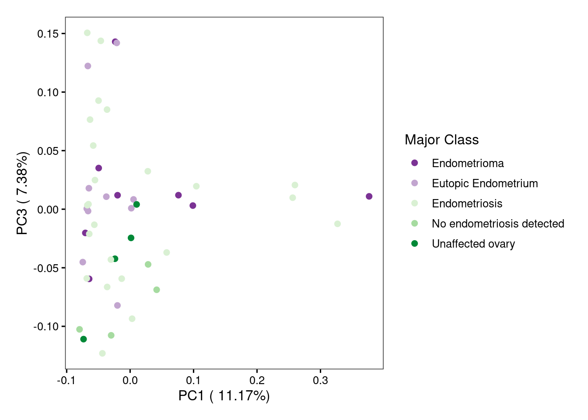
p <- ggplot(data=df_out, aes(x = PC1, y = PC4, color= Class)) +
geom_point(size = 2) +
scale_colour_manual(name = "Major Class", values = c("Endometrioma" = "#7b3294",
"Eutopic Endometrium" = "#c2a5cf",
"Endometriosis" = "#d9f0d3",
"No endometriosis detected" = "#a6dba0",
"Unaffected ovary" = "#008837")) +
xlab(percentage[1]) +
ylab(percentage[4]) +
theme_bw(base_size = 12) +
theme(panel.background = element_blank(),
panel.border=element_rect(fill=NA),
panel.grid.major = element_blank(),
panel.grid.minor = element_blank(),
strip.background=element_blank(),
axis.text.x=element_text(colour="black"),
axis.text.y=element_text(colour="black"),
axis.ticks=element_line(colour="black"),
plot.margin=unit(c(1,1,1,1),"line"))
p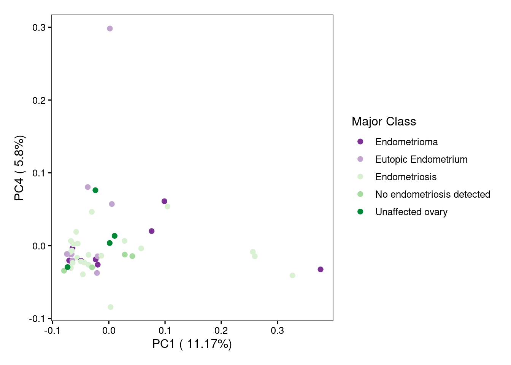
Figure 3-G
cor.mat = cor(data.m.prob)
my_cluster_col = my_cluster_col[match(colnames(cor.mat), rownames(my_cluster_col)),]
rownames(cor.mat) <- colnames(cor.mat) <- paste0(my_cluster_col$Patient.No., " - ", my_cluster_col$ID, " - ", rownames(my_cluster_col))
rownames(my_cluster_col) <- rownames(cor.mat)
ha2 = HeatmapAnnotation(df = my_cluster_col[, c(1, 2, 3, 4)],
col = list(Major.Class = c("Endometrioma" = "#7b3294",
"Eutopic Endometrium" = "#c2a5cf",
"Endometriosis" = "#d9f0d3",
"No endometriosis detected" = "#a6dba0",
"Unaffected ovary" = "#008837"),
Patient.No. = c( "1" = col[1],
"2" = col[2],
"3" = col[3],
"4" = col[4],
"5" = col[5],
"6" = col[6],
"7" = col[7],
"8" = col[8],
"9"= col[9],
"10" = col[10],
"11"= col[11],
"12" = col[12],
"13" = col[13],
"14" = col[14],
"15" = col[15],
"16" = col[16],
"17" = col[17],
"18" = col[18],
"19" = col[19],
"20"= col[20],
"21" = col[21]),
Fresh.Frozen = c("Fresh" = "#8c510a",
"Frozen" = "#bf812d"),
Menstrual.Cycle.Stage = c("early-mid-late-secretory" = "red",
"proliferative" = "orange")
)
)
ht1 = Heatmap(cor.mat,
cluster_columns = T,
cluster_rows = T,
show_row_names = T,
row_names_gp = gpar(fontsize = 8),
column_names_gp = gpar(fontsize = 8),
row_names_side = "right",
rect_gp = gpar(col = "black", lwd = 0.6),
show_column_names = T,
top_annotation = ha2,
column_split = 3,
row_split = 3,
clustering_distance_columns = "canberra",
clustering_distance_rows = "canberra",
clustering_method_columns = "ward.D2",
clustering_method_rows = "ward.D2",
col = colorRamp2(c( min(cor.mat), mean(cor.mat), max(cor.mat) ), c("#2166ac", "#f7f7f7", "#b2182b"))
)
draw(ht1, heatmap_legend_side = "left", annotation_legend_side = "right")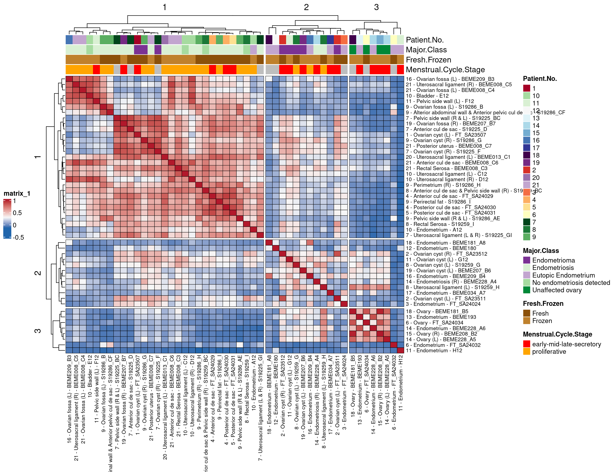
Figure 3-I
table.class.cell = table(aux.seurat@meta.data$active.cluster, aux.seurat@meta.data$Major.Class)
table.class.cell.perc = table.class.cell/rowSums(table.class.cell)
obs.class.perc = table(aux.seurat@meta.data$Major.Class)/length(aux.seurat@meta.data$Major.Class)
table.fc = table.class.cell
table.fc = is.na(table.fc)
for (class in colnames(table.class.cell.perc)) {
for (cell.type in rownames(table.class.cell.perc)) {
expected = table.class.cell.perc[cell.type, class]
obs = obs.class.perc[class]
if (obs > expected) {
ratio = -(obs/expected)
} else {
ratio = expected/obs
}
#ratio = expected/obs
table.fc[cell.type, class] = ratio
}
}
quantile_breaks <- function(xs, n = 10) {
breaks <- quantile(xs, probs = seq(0, 1, length.out = n))
breaks[!duplicated(breaks)]
}
mat_breaks <- quantile_breaks(table.fc, n = 11)
table.fc = table.fc[,c("Endometrioma", "Endometriosis", "No endometriosis detected", "Eutopic Endometrium", "Unaffected ovary")]
pheatmap(t(table.fc),
display_numbers = signif(t(table.fc), 3),
color = colorRampPalette(c("#81B8D5", "white", "#E37F65"))(10),
breaks = mat_breaks,
cluster_rows = F,
cluster_cols = F,
fontsize = 14)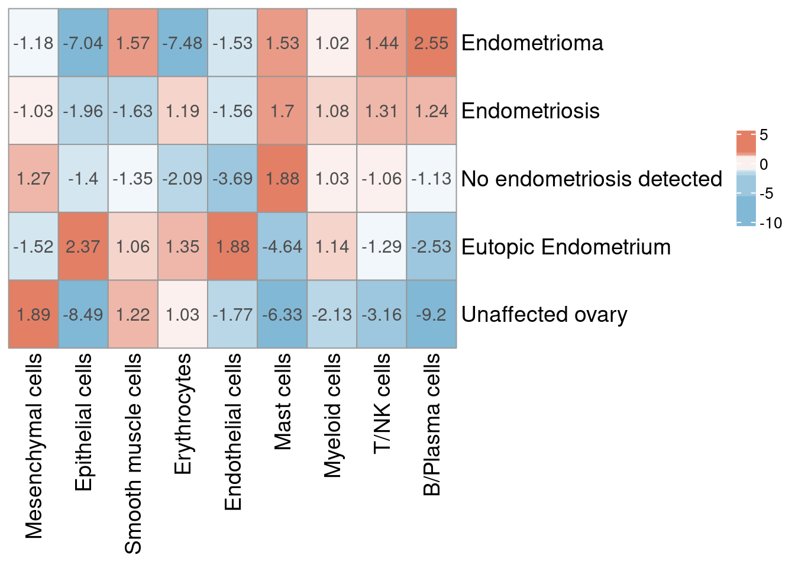